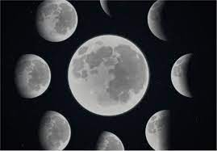

Fases da lua Ao executar sua trajetória, ocorre a gradual mudança de fases, dividida em quatro etapas principais. Durante a lua nova, nosso satélite natural apresenta sua face não iluminada totalmente voltada para a Terra, de forma que se torna impossível sua observação. Cerca de uma semana após a lua nova, metade do disco lunar torna-se iluminado, caracterizando o quarto crescente. Nesse período, o satélite é visível ao entardecer. Duas semanas após a lua nova, todo o disco lunar fica iluminado, marcando a lua cheia. O satélite, por estar em posição oposta ao Sol, surge no horizonte leste quase que ao mesmo tempo do pôr-do-sol. Sete dias após a Lua cheia, acontece o quarto minguante, em que o disco está novamente iluminado pela metade. Nessa fase, a Lua passa a ser visível somente no período da madrugada. Por último, sua porção visível diminui até se tornar nula, retornando a fase da lua nova. Após essas quatro fases, o ciclo recomeça, durando cerca de 29,5 dias. Um ciclo completo das fases da Lua é denominado mês lunar. Uma das características importantes da Lua é a da sincronização de sua rotação e translação, fazendo com que o satélite tenha sempre a mesma face voltada para a Terra em qualquer ponto do planeta.
É o momento em que não se vê a Lua no céu. Nesse período, apenas a face que não é voltada para a Terra recebe a luz solar e por esse motivo não a enxergamos no céu.
A Lua começa a dar as caras. A Lua não tem cantos e por isso ela começa a se apresentar em um formato côncavo. Forma-se um “sorriso no céu”.
Esse momento implica que o satélite natural está em uma posição de 90º em relação à Terra. Dessa forma, sua porção iluminada pelo Sol está visível acima de 34% para os observadores da Terra.
Essa fase é um momento de transição entre o Quarto Crescente e a Lua Cheia. O período é marcado por parecer quase completo. É quando a Lua está “quase lá”.
O grande momento da Lua é a fase chamada de Lua Cheia. Durante esse período do ciclo, toda a face da Lua voltada para Terra é iluminada pela luz solar e, por isso, a enxergamos de forma “completa”. Uma grande bola de luz branca no céu.
A fase de transição de Lua Cheia para Lua Minguante é conhecida como Minguante Gibosa. Nesse momento a Lua começa a “diminuir” (ou minguar). O seu movimento de órbita faz com a face virada para Terra passe a ser cada dia menos iluminada pelo Sol. Vemos a Lua em um formato convexo no sentido oposto da Crescente Gibosa: cada dia menor.
A Lua fica novamente pela “metade”; desta vez, no sentido contrário ao Quarto Crescente. Mais uma vez, o formato se dá pelo posicionamento 90º com a Terra. É como se houvesse uma simetria e a Lua estivesse fazendo o caminho de volta de onde começou.
Na última fase, a Lua vai se despedindo em um formato côncavo, contrário ao sentido da Lua Nova. Durante o período, o satélite natural vai “desaparecendo” até chegar na Lua Nova mais uma vez, quando sua face virada para a Terra não é iluminada pelo Sol.